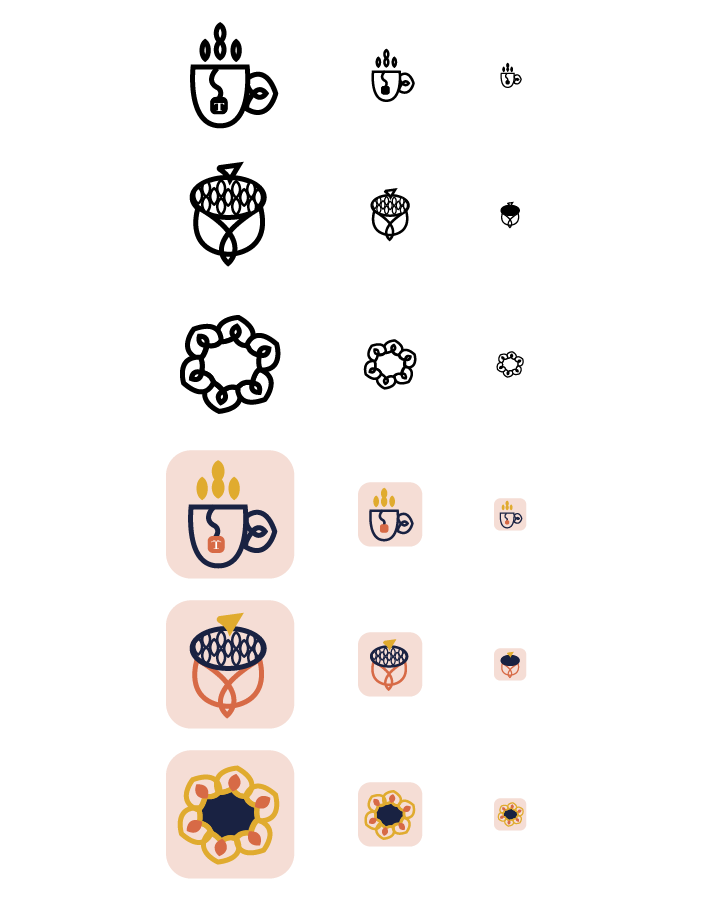

October 2,2019
Project 2: Scalable Icons

September 4, 2019
Project 1: Isometric Avatar

For this first project I used an isometric grid in Adobe Illustrator and made an avatar of myself. There were some key characteristics that I felt were most important to represent myself like my curly hair, cup of tea, and Converse. I did my best to accurately portray my facial features while keeping a sort of whimsical feel. The most difficult part was seeing the dimention in the isometric grid.